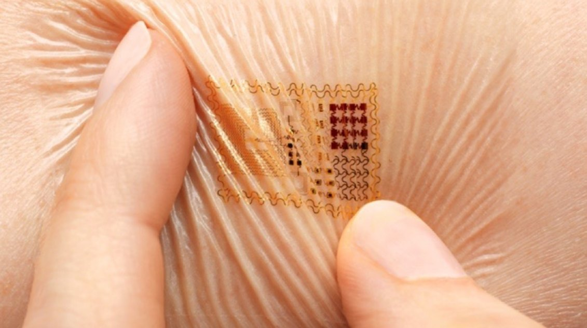

Postdoctoral Research Fellow2023 – presentUniversity of Missouri-Columbia
NextGen Precision Health Institute
Advisor: Prof. Zheng Yan
Research: Soft biomaterials and bioelectronics

Soft materials
Soft and porous biomaterials for seamless bio-interfaces
Tissue is soft, wet, and constantly moving, and conventional electronics are none of these. I design porous fibrous and nanofibril materials with built-in multifunctionality: they are permeable to sweat, exudate, and gas, mechanically compliant with skin and soft tissue, and able to carry sensing and therapeutic components. Current work addresses strain-resilient interfaces and selectively damping materials that suppress motion artifacts in skin-interfaced devices.
Key work: Materials Today 2025 (highlighted) · Advanced Materials 2024 · Materials Horizons 2025